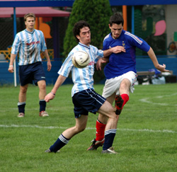
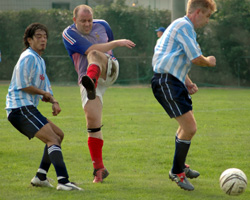

|
YC&AC Saturday 15th October. YCAC1 finally kicked off its TML season with a convincing 3-0 win over an unusually subdued French side on saturday.
Having waited so long for the chance to play, the actual start was something of a damp squib for the YCAC boys. 4 dropouts midweek and scrounging for subs, a linesman and even a ref before KO deflates the preseason bubble just a little.
Ref Pietro again had trouble with his watch, 2 Half time arrivals and 1 overrun night game finishing in the dark in his last 3 YCAC games. Thanks to BigSteve Mckie for stepping up to ref the 1st 40 and ref very well too. The 57 Old Farts that run the League, for readers that recall Will Carling, might want to wake up to the obvious fact that todays Ref needs to be 6'4" 17 1/2 stone and conversant with modern man management techniques in dealing with player histrionics. "You're going to need to have this whistle surgically removed if you don't shut the f*** " is the blindingly obvious way to deal with someone whos in your face with "Excuse me for asking but how long to go, Ref?"
To be fair the 2H was well reffed too and the whole game was played in a good spirit. Both teams had a few missing and ended the game with the bare 11. France were unfortunate that their most dangerous player was hurt at the start of the 2H and only able to hobble manfully through the 2nd period.
YCAC made a solid start and scored a nice goal midway through the 1st period. A timely pass from debutant Wayne Bannon put James Absolom clear on goal and he confidently chipped over the diving keeper. The goal seemed to inspire the French more than it did the scorers however and France had the better of the game up until HT. They looked like a team playing their 6th game of the season and they ran YCAC ragged for a time. Most of the neat interplay took place in midfield however and only one chance worthy of the name was created, and spurned.
The 2nd period was a different story and completely dominated by the home side. Goals in quick succession from Joe Takeda and Wayne Bannon killed the game off. A solid core up the middle of a vociferous Gary Hodgson in goal, hungover Daisuke in defence and Gavin and Kevin Morgan in midfield shut down the French giving Joe Takeda, Marc Knief and Rob Kester the space to attack down the flanks and keep Les Bleus stretched throughout the half. 3-0 up, YCAC might have stepped up a gear to make a statement against respected opponents but were never quite able to.
France didn't give up though. An unattended Olly had a sharp effort saved at the near post setting Gary Hodgson off barking again and only a remarkable goaline tackle by Dickie Filo saved his skipper blushes after a fluffed clearance had put the French CF clear
An evenly fought contest but YCAC were worth the 3-0 overall. MOM? BigSteve McKie
Steve Taw
|